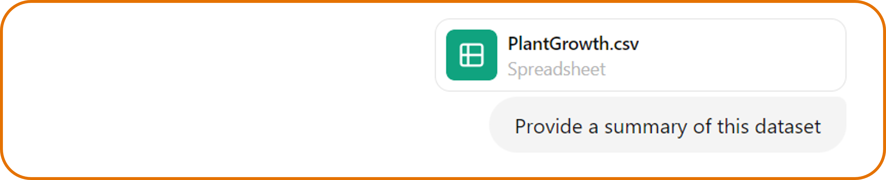
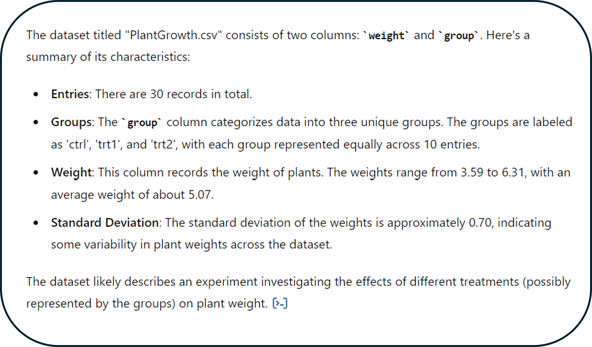
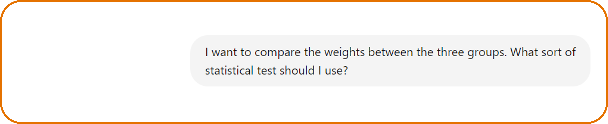
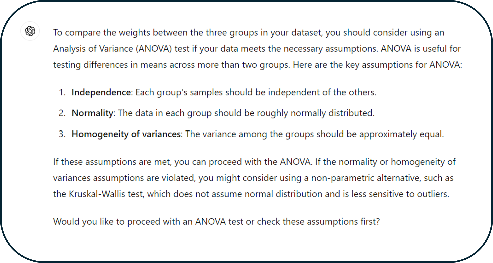
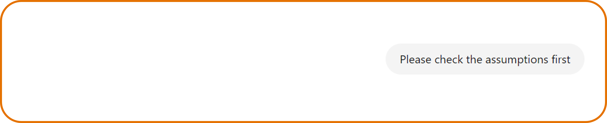
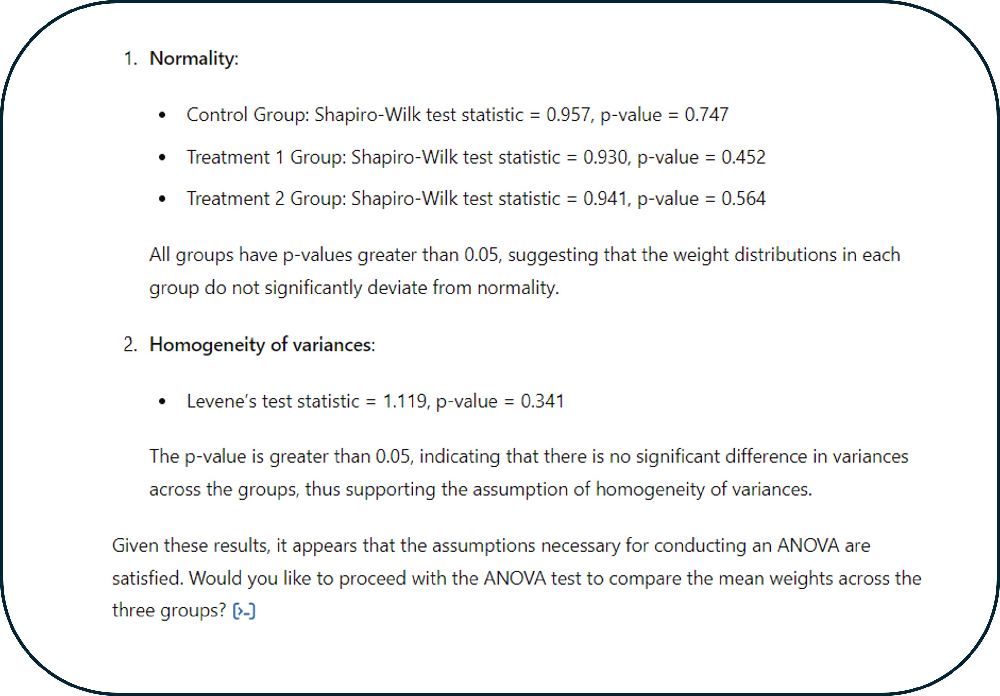
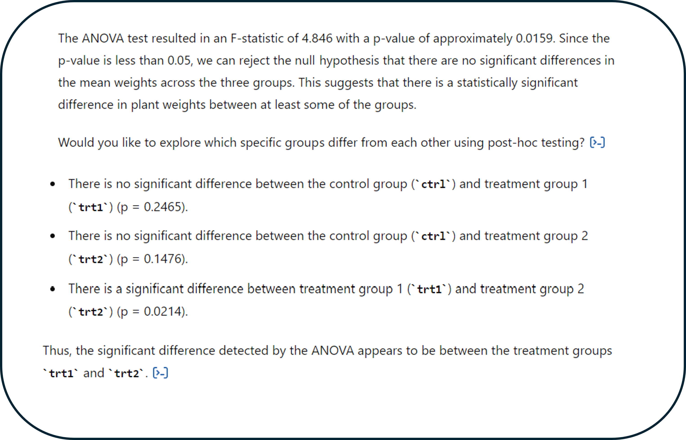
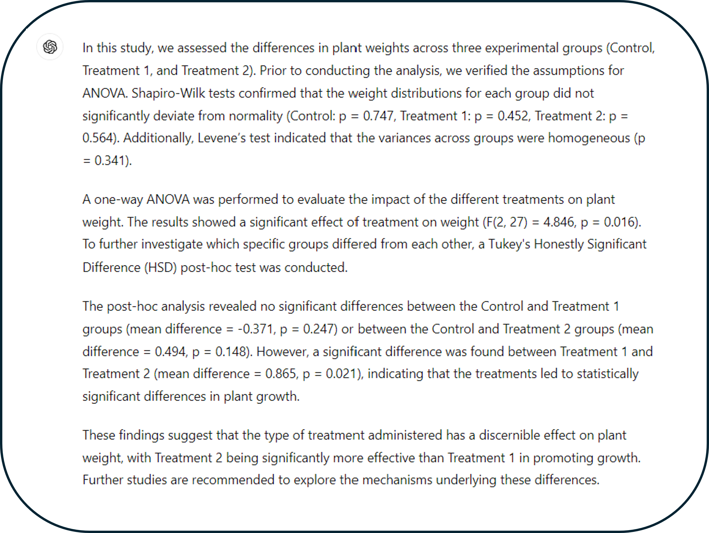
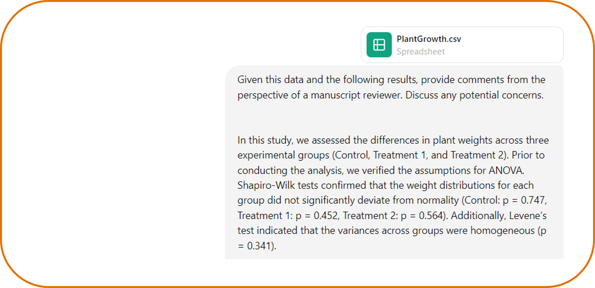
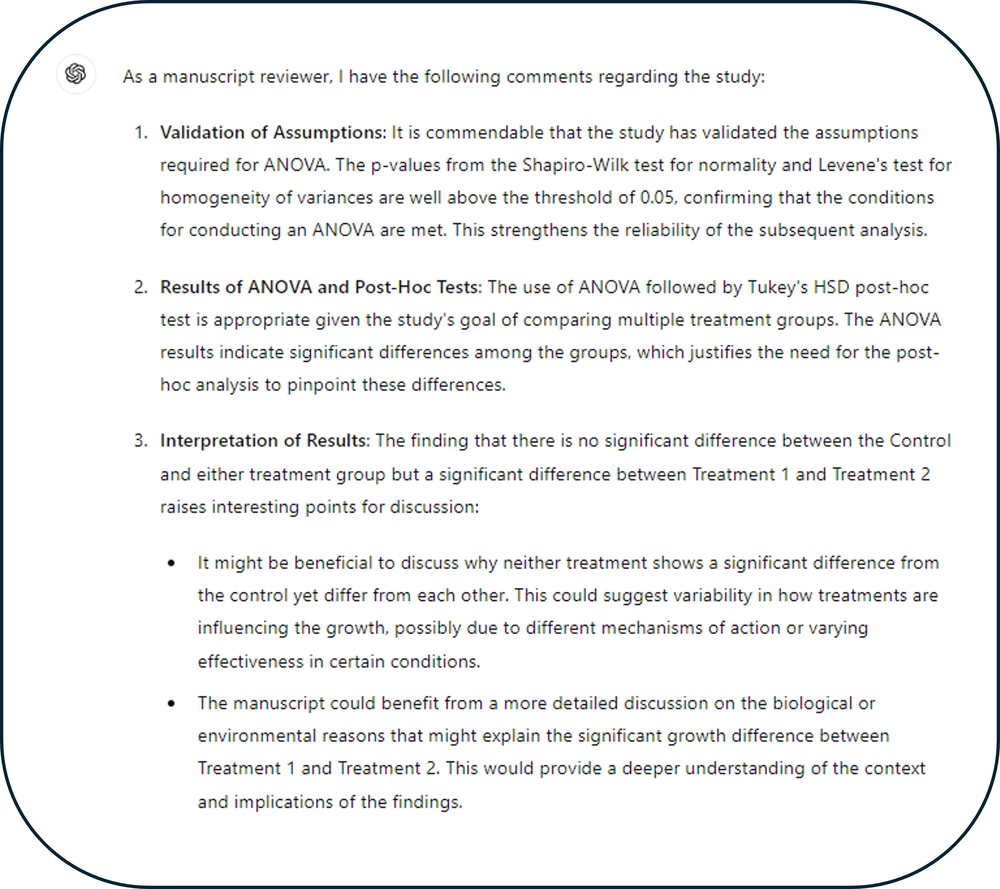

Generative AI & Data Analysis: Statistics
ChatGPT 4 includes access to an improved model and additional capabilities, including running Python code in the web browser. Because of this, you're able to perform statistical analyses.

ChatGPT 4: Data Analyst GPT
Full access to ChatGPT 4 currently requires a paid membership for ChatGPT. It has additional capabilities such as being able to upload external files. Due to security and privacy concerns only publicly available data should be uploaded. ChatGPT 4 also includes access to additional specialized GPTs such as DALL-E and Data Analyst. The Data Analyst GPT is capable of writing and running Python code in the browser, so you don’t have to copy code and run it locally. It can be used to help with all stages of your data analysis including:
Although this can all be very helpful, it is important to remember that you must verify the results . In this tutorial, we'll focus on how to use the Data Analyst GPT for formal hypothesis testing

Tutorial: Statistical Analysis
Scenario: We have been given a dataset on crop yields under various conditions, and our goal is to determine if there are significant differences in crop yield between these conditions.
Before diving into data analysis, it's crucial to start by viewing and summarizing the dataset. This helps ensure that the data has been imported correctly and that there are no unexpected issues. We'll use ChatGPT-4 to provide a summary of our plant dataset.
Initial Upload
ChatGPT 4 Response
From this, we know that the dataset has two columns: "weight" and "group," with thirty observations in total. This dataset represents an experiment focused on how different treatments affect crop yield which is measured by dry weight.

While we could create a visualization like in the previous tutorial, let's dive into a more formal statistical analysis this time. If we're unsure about the best statistical test for this dataset, we can ask ChatGPT-4 for suggestions. To get the most useful advice, we should be specific about our objective. Instead of asking for general options on how to analyze the dataset, we'll start our prompt by stating our goal: to compare the weights between the three groups.
Statical analysis options
ChatGPT 4 Response
ChatGPT-4 suggests using an ANOVA for our question. If you’re not familiar with ANOVA, you should ask follow-up questions to understand why this test was recommended. Additionally, you can inquire about other potential statistical tests to consider. For now, we'll proceed with the ANOVA suggestion. ChatGPT-4 also provides the assumptions for conducting an ANOVA and asks whether we'd like to proceed with the test or check the assumptions first. It's always important to check the assumptions of a statistical test, so we'll request that ChatGPT-4 verifies these assumptions for us.
Checking assumptions
ChatGPT 4 Response
Based on these results, ChatGPT-4 confirms that the assumptions of an ANOVA are met. By default, ChatGPT uses formal hypothesis tests like the Shapiro-Wilk test to check these assumptions. Sometimes, these tests can be too conservative, so we could also use visual checks like QQ plots. For now, I am satisfied with these results and we will proceed with the ANOVA and post-hoc testing.
ANOVA

ChatGPT 4 Response
Based on these results, we found a statistically significant difference between the two treatment groups. However neither of the treatment groups had a statistically significant difference with the control group.
Once you have results, you often need to summarize them in formal language. ChatGPT can help with this task as well. Let's ask for the results to be written in language suitable for a journal article. We’ll also specify that it should include a discussion of the assumptions.
Formal summary
ChatGPT 4 Response
This is a nice summary of the results we obtained with ChatGPT-4, but how confident are we in them? I mentioned a few places above where I could have asked ChatGPT-4 follow-up questions but did not. To ensure we made the best decisions, let's ask ChatGPT-4 to review our results from the perspective of a manuscript reviewer. To do this, I will first open a new chat session with ChatGPT-4 and provide our results. I'm opening a new session to ensure our previous context does not bias the interpretation of the results.
Review results
ChatGPT 4 Response
Overall, the comments from ChatGPT-4 are positive. It suggests that we think more deeply about why only Treatment 1 and Treatment 2 are significantly different, which is something we would want to discuss in a full manuscript.
If you're unsure about any suggestions made by ChatGPT-4, you can ask for additional clarification. Ultimately, it is your decision whether to implement these suggestions or not. This is just another way to use ChatGPT-4 to help improve your data analysis. Once you're satisfied with your analysis, you can also ask ChatGPT-4 for a download of the script you made during the session. Having a local copy of any final analysis is important so that others can replicate what you did.
Key takeaways
ChatGPT and other GenAI models can be helpful in your data analysis, but there are certain things you must remember when using it: